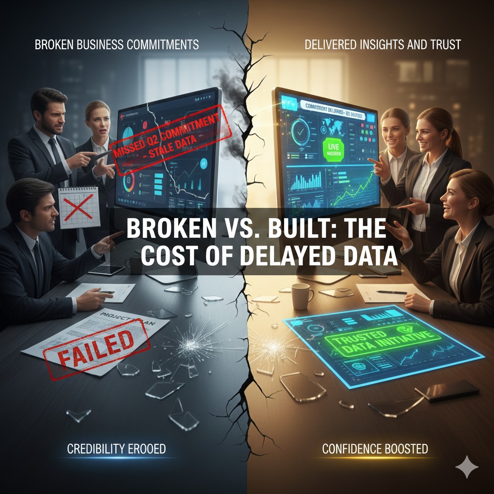
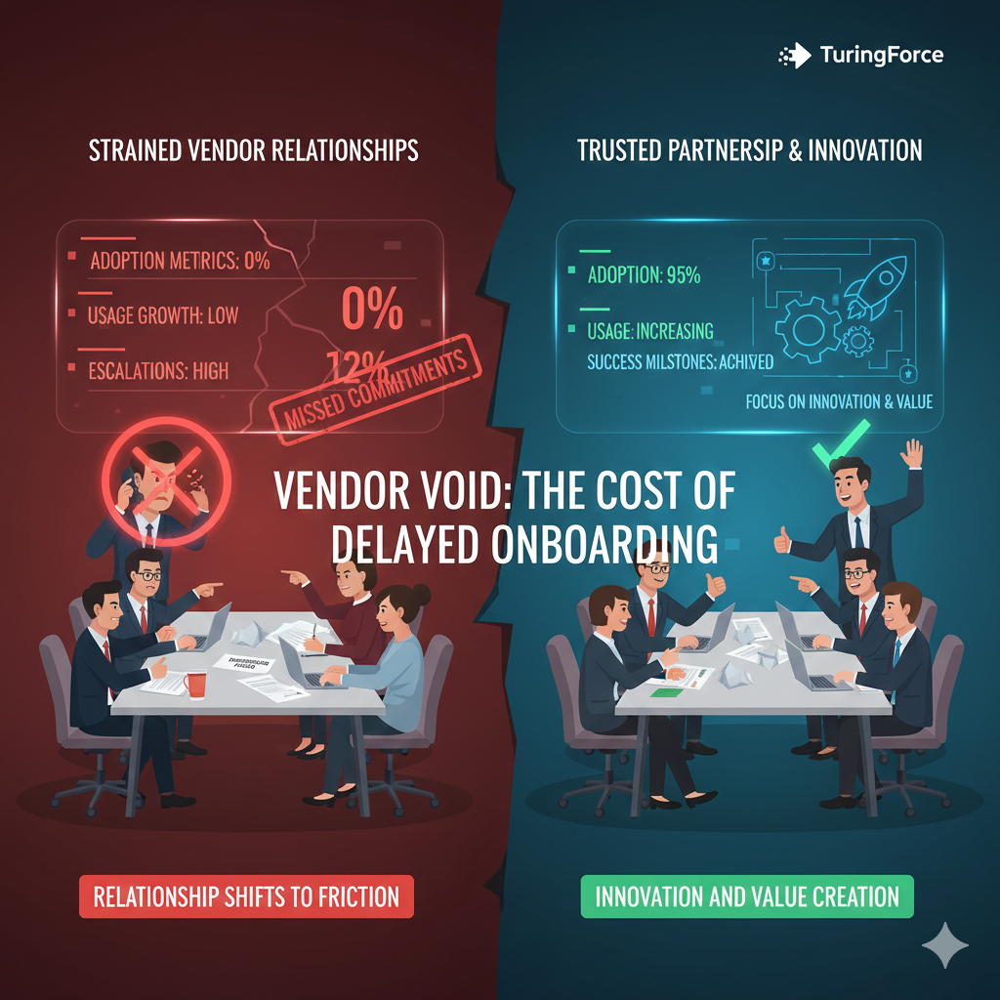

In modern enterprises, data platforms are no longer optional—they are foundational. Organizations invest heavily in platforms like Snowflake, Databricks, and analytics tools, yet often underestimate the most critical step: getting data onboarded and usable. When data is not onboarded on time, the cost extends far beyond technical inconvenience. It impacts decision-making, business commitments, resource utilization, and even vendor relationships.
This article explores the cascading impact of delayed data onboarding across the organization.
1. Decision Latency: When Insight Arrives Too Late
Delayed data onboarding directly increases decision latency—the time it takes for leaders and teams to access actionable insights.
When data pipelines are not live:
- Dashboards remain incomplete or inaccurate
- Reports rely on manual extracts or stale data
- Leaders delay or second-guess decisions
In fast-moving markets, decisions made late are often as costly as wrong decisions. The absence of timely data forces organizations to operate on assumptions rather than evidence, reducing agility and competitive advantage.
2. Broken Business Commitments and Lost Credibility
Most data initiatives begin with explicit business commitments:
- "This data will be available by Q2"
- "This dashboard will support the next planning cycle"
- "This domain will unlock new revenue insights"
When onboarding slips, these commitments are missed. The consequences include:
- Loss of trust between business and data teams
- Reduced confidence in future data initiatives
- Hesitation from stakeholders to invest in new analytics efforts
Over time, delayed onboarding erodes the credibility of the data organization, even if the underlying platform is technically sound.

3. Dependent Teams Blocked from Building Domain Capabilities
Data onboarding is often the critical path dependency for downstream teams:
- Analytics and BI teams
- Machine learning and AI teams
- Product and domain-specific engineering teams
When data is not available:
- Domain models cannot be built
- Metrics and semantic layers remain undefined
- AI/ML initiatives stall before experimentation even begins
Highly skilled teams are forced to wait, context-switch, or work on low-impact tasks—creating frustration and reducing overall organizational velocity.
4. Underutilized Systems: Snowflake, Databricks, and Beyond
Enterprises invest significant capital in modern data platforms:
- Snowflake warehouses
- Databricks lakehouses
- Streaming and orchestration tools
Delayed onboarding leads to system underutilization:
- Warehouses sit idle or run at minimal capacity
- Compute credits go unused
- Performance and scalability benefits are never realized
From a financial perspective, this is sunk cost without return. From a leadership perspective, it raises uncomfortable questions about ROI and execution effectiveness.
5. Underutilized Software Subscriptions and Licenses
Beyond core platforms, organizations often license:
- BI tools
- Data quality platforms
- Observability and governance tools
- ML and AI tooling
Without onboarded data:
- Licenses remain unused
- Features are never activated
- Adoption metrics fall short of expectations
This creates pressure during renewals and increases scrutiny from finance and procurement teams—often resulting in reduced budgets or canceled contracts.
6. Strained Vendor Relationships and Escalations
Delayed data onboarding doesn't only affect internal teams—it impacts software vendors as well.
Vendor account managers are often measured on:
- Adoption metrics
- Usage growth
- Customer success milestones
When onboarding delays occur:
- Vendors struggle to meet their internal commitments
- Escalations increase on both sides
- Relationships shift from partnership to friction
Instead of focusing on innovation and value creation, conversations become reactive—centered on delays, justifications, and missed expectations.

Conclusion: Data Onboarding Is a Business-Critical Capability
Delayed data onboarding is not a technical inconvenience—it is a business risk multiplier. It slows decisions, breaks commitments, blocks teams, wastes investments, and strains partnerships.
Organizations that treat data onboarding as a first-class, governed, and repeatable capability—rather than a one-off engineering task—unlock faster time-to-value, higher trust, and predictable outcomes.
In today's data-driven enterprises, speed to usable data is speed to impact.